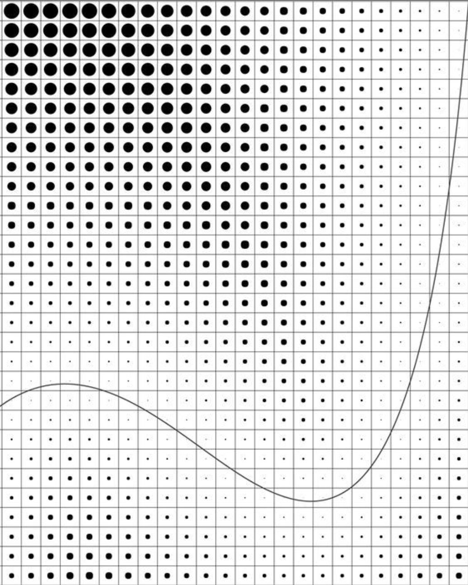
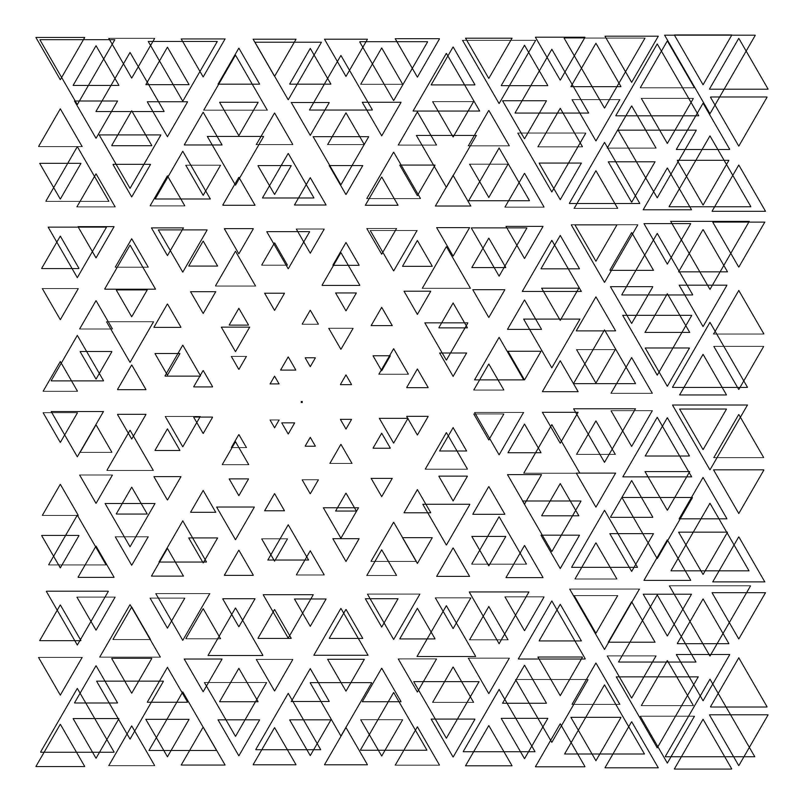

Parametric design is a paradigm in design where the relationship between elements is used to manipulate and inform the design of complex geometries and structures.
Parametric modelling (or parametric design) is the creation of a digital model based on a series of pre-programmed rules or algorithms known as 'parameters'. That is, the model, or elements of it are generated automatically by internal logic arguments rather than by being manually manipulated.
The term "parametric" originates from mathematics (parametric equation) and refers to the use of certain parameters or variables that can be edited to manipulate or alter the end result of an equation or system.
While today the term is used in reference to computational design systems, there are precedents for these modern systems in the works of architects such as Antoni Gaudí, who used analog models to explore design space.
Archimatix is a node-based parametric modeler extension for Unity 3D. It enables visual modeling of 3D models within the Unity 3D editor.
The Grasshopper canvas with some nodes Grasshopper 3d (originally Explicit History) is a plug-in for Rhinoceros 3D that presents the users with a visual programming language interface to create and edit geometry.
Max Creation Graph is a visual programming node-based tool creation environment in 3ds Max 2016 that is similar to Grasshopper and Dynamo.
One of the first architects and theorists that used computers to generate architecture was Greg Lynn. His blob and fold architecture is some of the early examples of computer generated architecture.
Shenzhen Bao'an International Airport's new Terminal 3, finished in 2013, designed by Italian architect Massimiliano Fuksas, with parametric design support by the engineering firm Knippers Helbig, is an example for the use of parametric design and production technologies in a large scale building.